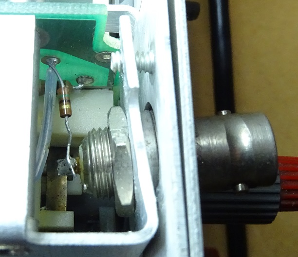
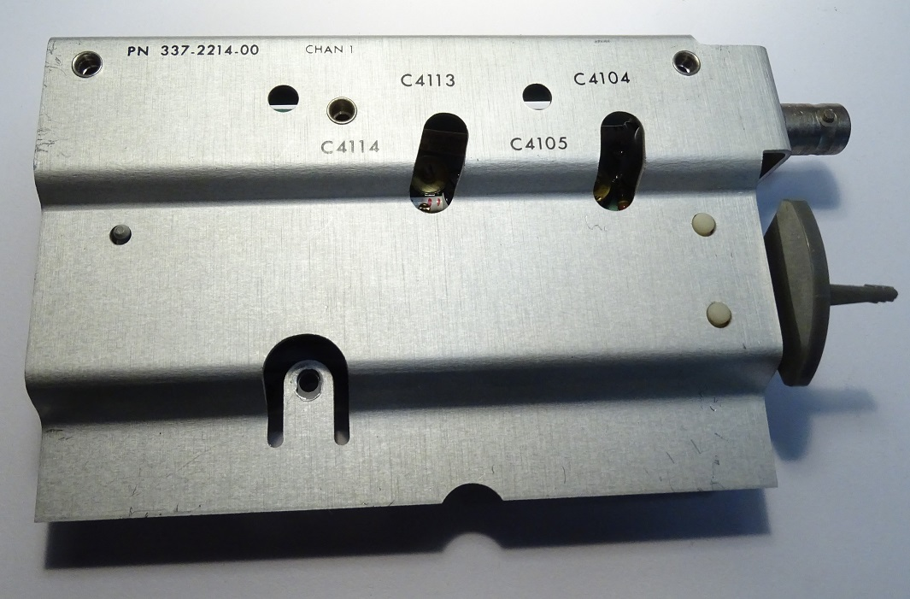
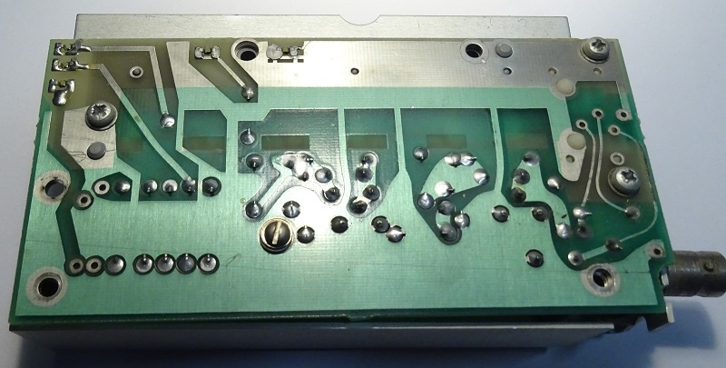
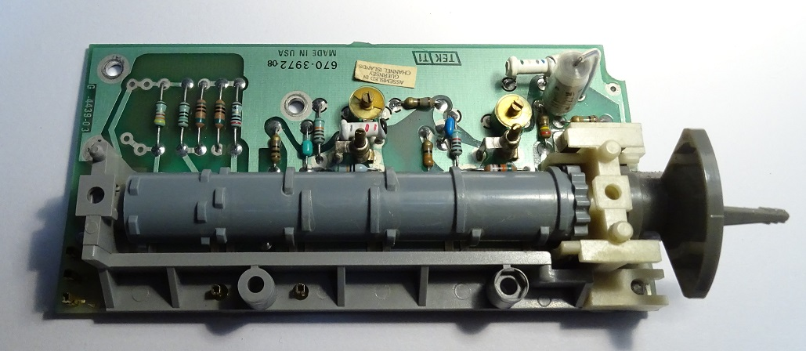
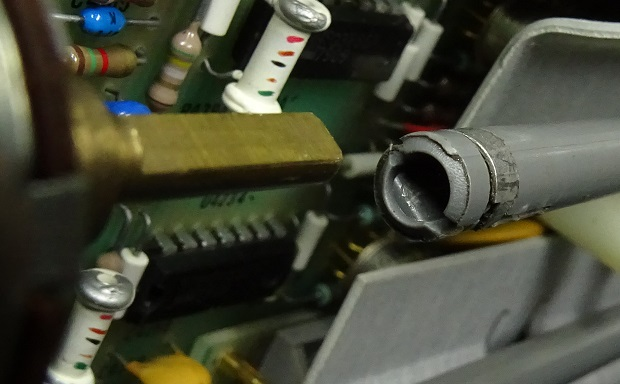
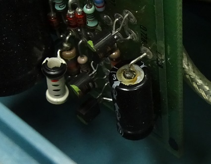
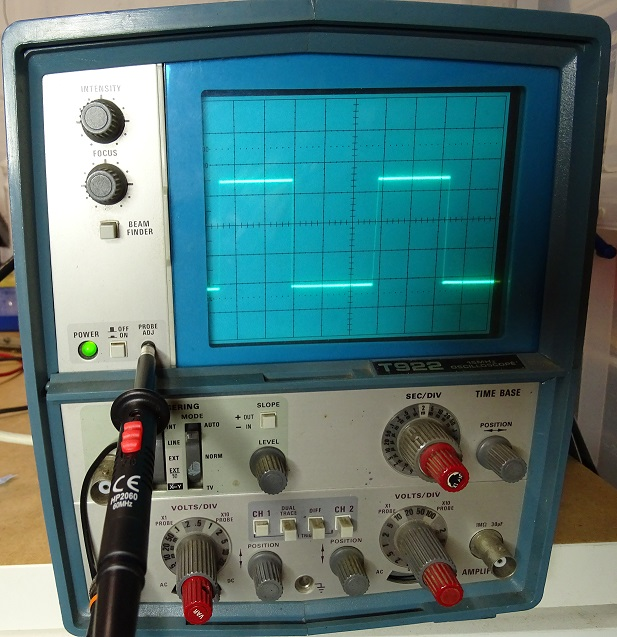

I noticed that channel 1 of my Tektronix T922 oscilloscope was not display the DC output of my (very) primative HV supply. Upon hooking up a known-good probe to the probe adjust output on the T922, I initially observed no signal - however adjusting the vertical amplifier to its most sensitive, I was able to just pick out some edges, as though a tiny amount of AC coupling was occuring. Unfortunately I lept into the repair before recording an image of this failure output, so just imagine it in your mind.
As channel 1 was affected, it made sense to remove the left panel. Peering into the attenuator assembly, it was obvious as to the failure - resistor 4103 (shown on page 139 of the pdf file [1]) had detatched from the PCB, due to some excessive twisting force on the BNC which had a loosened nut. See figure 1 for this view. The close proximity (and probably occasional contact) explains why I don't recall ever having put such force on the instrument recently, but was still able to make measurements. There also appears to be no nut securing the attenuator assembly shield to the front panel screw.
Figure 1: Loose resistor on channel 1 of the T922. Note the small copper dot on the solder on the PCB - this is where the leg initially was soldered.
It was probably possible to resolder the resistor through the gap in the attenuator assembly shield. However, I wanted to remove the assembly to properly tighten the BNC nut, thus preventing the detachment from reoccuring. This proved quite a struggle. Figure 2 shows the key points that must be addressed for removal. This are as follows:
- Remove the retaining screws (note one is missing in the top right circle in figure 2.
- Remove the VAR shaft coupler.
- Remove the voltage per div and var knobs from the front.
- Remove the verticle position knob and shaft (this is one connected piece of plastic).

Figure 2: Key points for the removal of the channel 1 attenuator assembly removal.
Removing the screws is simple enough. As was undoing the grub screw on the voltage per div VAR knob - though the grub screws for the VAR knob shaft were tiny - I needed to file the smallest Allen key I had to fit - it wasn't terribly tricky, but it means I cannot provide the required size. I would suggest removing the coupling for the VAR shaft altogether - leaving it on only gets in the way of removing the assy.
What did prove to be a source of angst was the removal of the verticle position knob and shaft - note that the knob and shaft are ONE piece - the grey plastic you see in figure 1 is all one piece and slides out to the front. The wording in the manual (page 5-12 [1]) lead me to believe that the knob should be removed and then the shaft should be removed - as two separate pieces. There is no need to fiddle with the metal band clamping the plastic to the shaft of the variable resistor. Just grip the knob and shaft simultaneously and pull outwards smoothly and everything should be fine.
Figures 3 and 4 show the removed attenuator assembly for the T922. Note there is one more screw that must be removed before the shielding can be taken off of the PCB - it is the flat head screw on the rear. I would advise against removing the other screws, as these hold the cam switch to the PCB. Removing the shield reveals the components within the attenuator, shown in figure 5.
Figure 3: Front view of the attenuator assembly for channel 1 of the Tektronix T922.
Figure 4: Rear view of the attenuator assembly for channel 1 of the Tektronix T922.
Figure 5: Internal view of the attenuator assembly for channel 1 of the Tektronix T922.
I took this opportunity to firmly tighten the BNC nut - a 13mm spanner did the job quite fine. The small resistor was soldered securely in place, and the process of rebuilding began. It it worth checking the verticle position shaft for the position of the internal arc (figure 6), positioning it against the flat of the variable resistor results in minimal force being required to slide into place. A similar locking arrangement is in place for the volts per div knob, meaning it is quite impossible to incorrectly reassemble - unless you insist on exterting excessive force on components.
Figure 6: Note the verticle position shaft and variable resistor should be properly aligned - in this case they are 180 degrees apart to illustrate their geometry.
Whilst the instrument was open, I took the opportunity to scan for any 'problematic' components. The only candidate of concern was the capacitor in figure 7 - it will be interesting to see if we return to this component in the future.
Figure 7: Dirty looking capacitor in the power supply.
After screwing the cover back in place, the probe adjust signal was measured as was found to be just as expected - figure 8 shows the output. Whilst this figure illustrates the proper operation of the instrument, it was taken at 0020, so please excuse the less than precise photography.
Figure 7: T922 working, showing the probe adjust signal.
In conclusion, the damage was easily identified and repaired. By disassembling the attenuator module, sufficient tightening was applied to the BNC nut to prevent excess force on component connections in the future. At some point in the future I will source a suitable nut for the front panel screw. Now for a beer and bed.
v1.0: 24/10/21